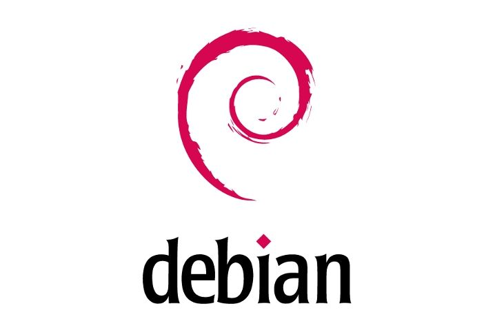
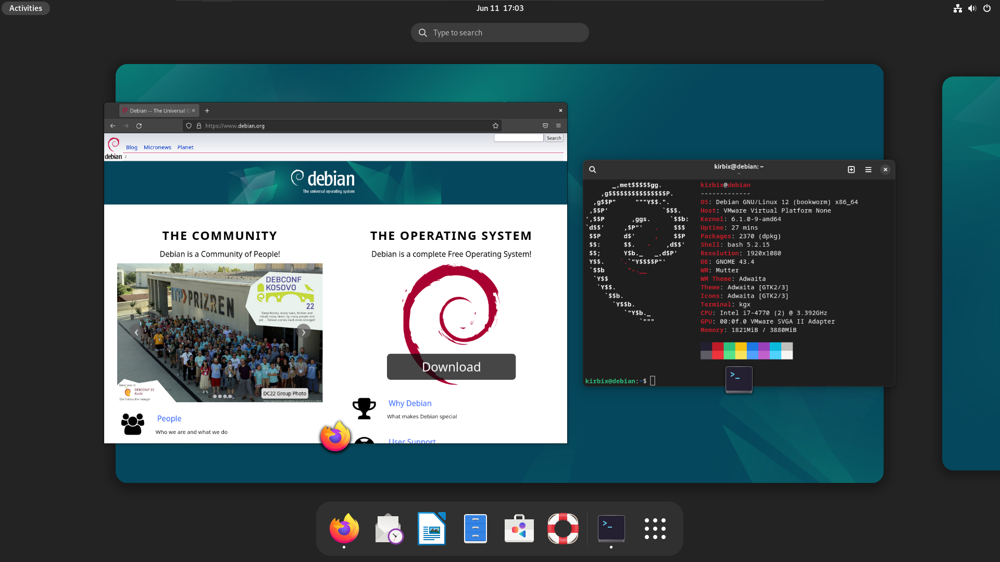

¿Qué es Debian?
Debian es una distribución de Linux compuesta por software libre y de código abierto, mantenida y actualizada por una comunidad de desarrolladores y usuarios voluntarios. Fue lanzada por primera vez en 1993 y es conocida por su estabilidad y robustez. Debian sirve como base para muchas otras distribuciones populares, como Ubuntu. Esta distribución se caracteriza por su extenso sistema de gestión de paquetes, el cual permite a los usuarios instalar y actualizar software fácilmente a través del gestor de paquetes APT. Debian soporta múltiples arquitecturas de hardware y se utiliza tanto en servidores como en equipos de escritorio.

¿Para qué personas está diseñado Debian?
Administradores de Sistemas y Desarrolladores: Debian es conocido por su estabilidad y seguridad, haciéndolo ideal para servidores y entornos de desarrollo. Los administradores de sistemas y desarrolladores lo aprecian por su robustez y flexibilidad.
Usuarios Avanzados de Linux: Aquellos con experiencia en Linux prefieren Debian por su capacidad de personalización y control sobre el sistema operativo. Es una elección popular para quienes desean construir sistemas específicos y optimizados.
Entusiastas del Software Libre: Debian es un proyecto comunitario y pone un fuerte énfasis en el software libre. Es atractivo para aquellos que desean usar y apoyar el software libre y abierto.

Requisitos del sistema para la instalación de los sistemas Operativos
Requisitos mínimos de hardware:
Procesador: Se recomienda un procesador de al menos 1 GHz.
Memoria RAM: Se recomienda tener al menos 1 GB de RAM para la instalación básica, pero se recomienda más para un mejor rendimiento, especialmente si planeas ejecutar aplicaciones más pesadas.
Espacio en disco: Para una instalación mínima, necesitarás al menos 10 GB de espacio en disco. Sin embargo, se recomienda tener más espacio para instalar software adicional y almacenar archivos.
Unidad de CD/DVD o puerto USB si planea instalar desde un medio externo.

Proceso de preparación del medio de instalación (USB, DVD, etc.).
1. Descarga la imagen de disco de Debian o Linux Mint:
2. Descarga la imagen ISO de Debian o Linux Mint desde el sitio web oficial correspondiente.
3. Selecciona un programa de creación de medios de instalación:
4. Puedes usar herramientas como Rufus (también funciona para Linux Mint), balenaEtcher o UNetbootin para crear un medio de instalación USB. Para crear un DVD, puedes usar el software de grabación de discos integrado en tu sistema operativo.
5. Inserte el medio USB o DVD:
6. Conecte el USB o inserte el DVD en su computadora.
7. Ejecuta el programa de creación de medios:
8. Abra el programa que elija para crear el medio de instalación.
9. Selecciona la imagen de disco de Debian o Linux Mint:
10. Selecciona la imagen ISO que descargaste.
11. Selecciona el medio de instalación:
12. Selecciona el medio USB o DVD en el que deseas grabar la imagen.
13. Inicia el proceso de creación:
14. Inicie el proceso para crear el medio de instalación. Este proceso formateará el medio
seleccionado y grabará la imagen de Debian o Linux Mint en él.

Pasos para acceder al menú de inicio y elegir el medio de instalación
1. Reinicia la computadora
2. Después de que el sistema se reinicie, verás una pantalla azul con opciones.
Selecciona Solucionar Problemas
3. Luego selecciona Opciones avanzadas.
4. Selecciona Configuración de firmware UEFI y luego haz clic en Reiniciar. O también puedes presionar una tecla específica cómo F12, F10, F2 o Del para acceder al menú de arranque.
5. En el menú de inicio, seleccione el dispositivo que contiene su medio de instalación (USB, DVD, etc.) utilizando las teclas de flecha.
6. Presiona Enter para arrancar desde el medio de instalación seleccionado.

Opciones de particionamiento del disco duro durante la instalación
Durante la instalación de Debian, se pueden crear particiones en el disco duro usando el particionado guiado. La manera recomendada es crear una pequeña partición (25 a 50 MB) al principio del disco para usarla como partición de arranque, y luego crear las otras particiones en el área restante. Esta partición de arranque se debe montar en /boot, ya que es en este directorio donde se almacenarán los núcleos de Linux. Debian permite los siguientes sistemas de ficheros: ext2, ext3, ext4, jfs, xfs, reiserfs y FAT16, FAT32. El sistema de ficheros por omisión seleccionado en la mayoría de los casos es ext4. Se recomienda tener al menos dos particiones para Linux: una para el sistema/datos y otra para Swap. Generalmente se suelen tener tres: una para el sistema/programas ( / ), otra para los datos ( /home ) y otra para swap. En la mayoría de los casos no es recomendable que la partición sea menor de 512 MB.

Configuración de ajustes básicos como idioma, huso horario y teclado
1. Idioma: Selección al inicio del instalador, que también configurará el idioma del sistema y las aplicaciones. 2. Huso horario: Configuración según la ubicación geográfica que determines durante la instalación. 3. Teclado: Selección del tipo de teclado y distribución durante el proceso de instalación.
Instalación de drivers necesarios para el funcionamiento del sistema
1. Automática: Muchos controladores están incluidos en el kernel de Linux y se instalan automáticamente. 2. Manuales: Si se requiere un controlador específico que no esté incluido, puedes instalarlo desde los repositorios de Debian o desde el sitio web del fabricante.
Creación de cuentas de usuario y configuración de contraseñas
Usuario root y normal: Durante la instalación, se te pedirá que configures una contraseña para el usuario root (administrador) y que crees una cuenta de usuario estándar con su respectiva contraseña.
Actualización del sistema operativo después de la instalación
APT: Usa el comando “sudo apt update && sudo apt upgrade” para actualizar el sistema. Esto garantiza que tu instalación tenga las últimas actualizaciones de seguridad y mejoras del sistema.
Configuración de la red y conexión a Internet.
1. Automática: Durante la instalación, si estás conectado a una red, el sistema operativo generalmente detectará y configurará automáticamente la conexión a Internet. 2. Manual: Si tienes una configuración de red específica, puedes configurar los detalles de la conexión, como IP estática, DNS y gateway, durante o después de la instalación. En Linux, herramientas como “nmcli” o NetworkManager simplifican este proceso.
Instalación y configuración de software adicional
APT: Usa “sudo apt install” para instalar software desde los repositorios oficiales. Flatpak y Snap: Opcionales para instalar software adicional y aplicaciones empaquetadas de manera universal.
Configuración de opciones de seguridad y privacidad.
Firewall: Se recomienda instalar y configurar “ufw” (Uncomplicated Firewall) para una gestión sencilla de las reglas de firewall. Actualizaciones de seguridad: Automatizar las actualizaciones de seguridad para asegurar que el sistema esté siempre protegido contra vulnerabilidades conocidas.
Resolución de problemas comunes durante la instalación
Errores de Particionamiento: Solución: Uso de herramientas de particionamiento como GParted en Linux para corregir errores de particionamiento. En Windows, el instalador incluye herramientas para crear y gestionar particiones. Fallos en la Instalación de Controladores: Solución: Verificar la compatibilidad del hardware y buscar controladores adicionales. En Linux, a veces es necesario agregar repositorios específicos o instalar controladores propietarios.
Recomendaciones y mejores prácticas para la instalación
1. Documentación: Consultar la documentación oficial durante la instalación y configuración para asegurar que se sigan las mejores prácticas. 2. Actualizaciones: Mantener el sistema actualizado regularmente para asegurar estabilidad y seguridad.